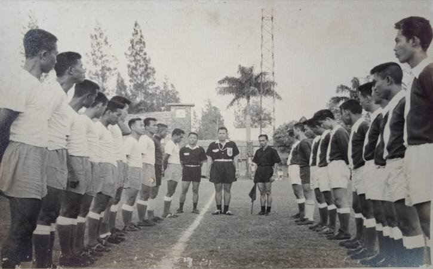
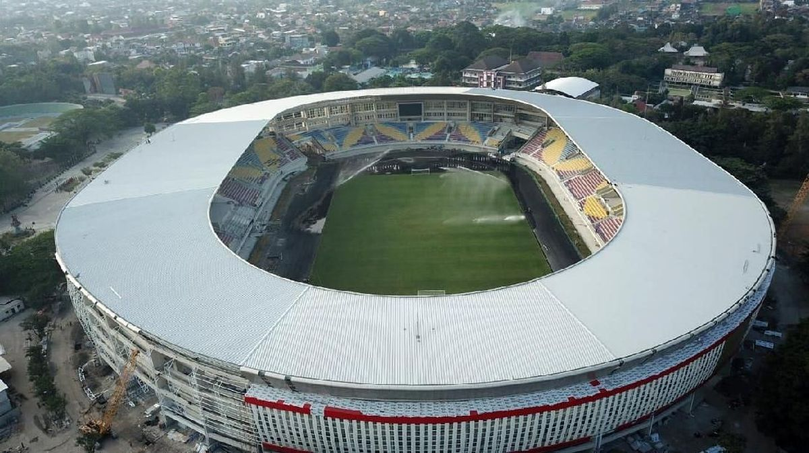
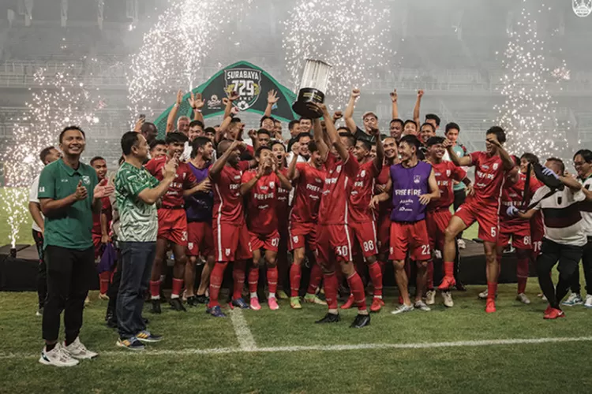

Sejarah

Persis Solo adalah klub sepak bola asal Solo, Jawa Tengah, Indonesia yang didirikan pada 8 November 1923. Persis Solo merupakan salah satu klub tertua di Indonesia dan memiliki sejarah panjang dalam dunia sepak bola nasional.
Pada era 1930-an hingga 1950-an, Persis Solo menjadi salah satu kekuatan dominan dalam sepak bola Indonesia. Klub ini meraih beberapa gelar juara nasional pada masa tersebut dan dikenal dengan basis suporternya yang fanatik, yakni
Pasoepati.
Stadion Manahan

Stadion Manahan adalah stadion kandang Persis Solo, terletak di Solo, Jawa Tengah. Stadion ini memiliki kapasitas sekitar 20.000 penonton dan sering digunakan untuk berbagai pertandingan nasional maupun internasional.
Stadion ini direnovasi dan diresmikan kembali pada tahun 2020. Stadion ini menjadi simbol kebanggaan masyarakat Solo dan markas utama Persis Solo dalam melangsungkan pertandingan kandangnya.
Prestasi

Persis Solo telah meraih beberapa gelar juara dalam sejarah sepak bolanya. Salah satu prestasi terbaik Persis Solo adalah menjadi juara Liga 2 Indonesia pada tahun 2021, yang membuat klub ini kembali ke kasta tertinggi sepak bola
Indonesia, Liga 1.
Domestik
Di Indonesia, Persis Solo telah meraih beberapa kejuaraan domestik, termasuk juara Liga Indonesia pada era awal kompetisi. Pada tahun 2021, Persis Solo menjuarai Liga 2 dan berhasil promosi ke Liga 1 Indonesia.
Eropa
Meskipun Persis Solo belum berkompetisi di tingkat Eropa, klub ini terus berusaha untuk menjadi salah satu klub terbaik di Indonesia dengan standar permainan yang tinggi dan dukungan penuh dari suporter setianya.
Dunia
Persis Solo dikenal tidak hanya di Indonesia, tetapi juga di luar negeri, terutama di kalangan penggemar sepak bola yang mencintai klub-klub tradisional dengan sejarah yang panjang. Dukungan fanatik dari suporter Pasoepati
membuat Persis Solo dikenal secara internasional.